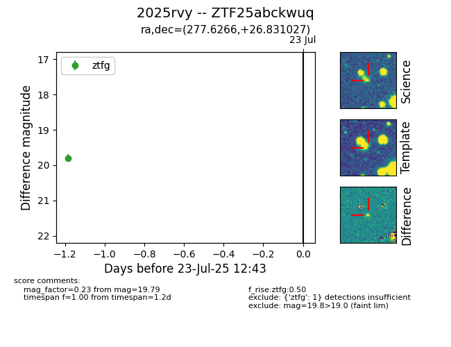

Target ZTF25abckwuq at 2025-07-23 12:43, see:
FINK: fink-portal.org/ZTF25abckwuq
Lasair: lasair-ztf.lsst.ac.uk/objects/ZTF25abckwuq
ALeRCE: alerce.online/object/ZTF25abckwuq
TNS: wis-tns.org/object/2025rvy
YSE: ziggy.ucolick.org/yse/transient_detail/2025rvy
alt names
ZTF25abckwuq (ztf,fink)
2025rvy (tns,yse)
coordinates:
equatorial (ra, dec) = (277.6266,+26.83103)
galactic (l, b) = (55.2399,+16.15550)
photometry
last ztfg=19.79
1 ztfg detections
